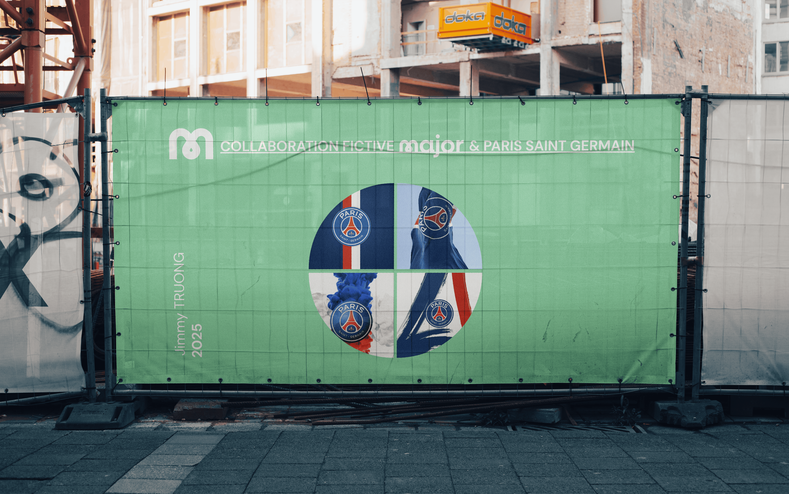

Paris Saint-Germain x Major Formation
Dans le cadre d’un projet personnel avec le Paris Saint-Germain, j’ai imaginé une identité visuelle mêlant l’univers du PSG à celui de Major, à travers des propositions de logos et plusieurs mockups illustrant cette collaboration.
Voir le prototype app ↗
Recherche et Concept
L’objectif était de mélanger l’univers du PSG avec celui de Major Formation, en s’inspirant des codes visuels des deux marques pour créer une identité commune.
Immersion

Fusion de logo
Les différentes étapes de création du logo fusionnant l’identité du PSG avec celle de Major Formation.

Transition
Évolution progressive des couleurs du PSG vers la palette graphique de Major Formation.

Goodies & Objets
Visualisation de l'image de marque sur des objets dérivés et textiles.

Logo en blanc
Mise en valeur du logo final en blanc sur fond noir pour un rendu épuré et contrasté.

Logo en noir
Déclinaison du logo final en noir sur fond blanc pour un rendu sobre et lisible.

Logo en couleurs
Présentation du logo final dans sa version couleur, mettant en valeur l’identité visuelle de Major Formation et du PSG.

Charte graphique
Une charte graphique mêlant le bleu, le rouge, l’or et le blanc pour allier l’identité du PSG à celle de Major Formation..

Typographie
Présentation des différentes typographies utilisées dans la conception du logo.